# Dimensionen des Bilds
dim(zebra)[1] 1277 1920 3Im zweiten Kapitel zum Thema Deep Learning befassen wir uns nun mit dem Thema Computer Vision und den dazugehörenden Convolutional Neural Networks (CNNs). Computer Vision heisst, wir wollen einem Computer bzw. einem Modell das “Sehen” beibringen. Das Modell soll zum Beispiel Gesichter erkennen, Bilder klassifizieren oder Objekte auf Bildern oder in Videos lokalisieren. Die ersten richtig grossen Durchbrüche von Deep Learning fanden ab 2010 im Bereich Computer Vision statt.
Ganz grob funktionieren CNNs so, dass sie in den ersten paar Layers nach dem Input Layer kleine Muster (sogenannte low-level features) identifizieren, z.B. horizontale oder vertikale Segmente, Halbkreise, Kreise, etc. In späteren Layers werden diese kleinen Muster zu grösseren, komplexeren Muster (sogenannte high-level features) kombiniert. Auch hier findet also ein autonomer (und automatischer) Feature Engineering Prozess statt. Am Schluss macht das CNN seine Vorhersagen basierend auf den abstrakten Muster und Formen, die es im Bild erkannt hat.
Vielleicht wundern Sie sich, warum wir dazu nicht die ANN Modelle aus Kapitel 8 verwenden. Das Problem ist, dass ANNs, wie wir sie kennen gelernt haben, nur für ganz kleine Bilder (die MNIST Bilder hatten eine ganz kleine Auflösung von \(28 \times 28\) Pixels) funktionieren. Für Bilder mit einer höheren Auflösung hätte unser ANN schnell mal viel zu viele Parameter und wäre nicht mehr trainierbar.
Wie viele Parameter (ohne Bias Terms) hätte ein ANN zwischen Input Layer und Hidden Layer, wenn die Bilder eine Auflösung von \(200 \times 200\) Pixels haben und wir 100 Neurons im Hidden Layer haben?
Dieses ANN hätte 40’000 Input Neurons (so viele wie das Bild Pixels hat) und dementsprechend \(100 \cdot 40'000 = 4 \text{Mio.}\) Parameter.
Um dieses Problem zu beheben, wurden CNNs entwickelt. Wie CNNs funktionieren und was für Arten von Layers sie enthalten, werden wir uns in diesem ersten Abschnitt zu CNNs anschauen.
Wir werden hier nun mit farbigen Bildern arbeiten. Im Fall von Grayscale Bildern (wie bei MNIST) konnte jedes Bild durch einen 2D-Array (= Matrix) dargestellt werden. Für farbige Bilder brauchen wir drei Dimensionen, denn jedes Pixel in einem Bild wird definiert durch den Anteil von Rot, Blau und Grün (RBG). Wir können uns ein farbiges Bild als drei Matrizen, welche übereinandergelegt werden, vorstellen:
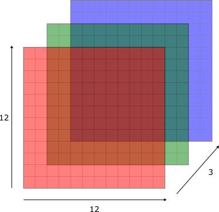
Im folgenden Code Block können Sie beispielsweise die Dimensionen eines Farbbilds eines Zebras (Quelle: Joachim Huber, via Wikimedia Commons, CC BY-SA 2.0) anschauen. Das Bild wurde im Hintergrund bereits geladen und kann hier als zebra aufgerufen werden:
# Dimensionen des Bilds
dim(zebra)[1] 1277 1920 3Das Bild ist also 1277 Pixel hoch, 1920 Pixel brei und die dritte Dimension beschreibt die drei Farbchannels.
Wir können das Bild selbstverständlich auch direkt in R plotten:
# Leere Plot-Hülle
plot(0:1, 0:1, type = "n", ann = FALSE, axes = FALSE)
# Bild plotten
rasterImage(zebra, 0, 0, 1, 1)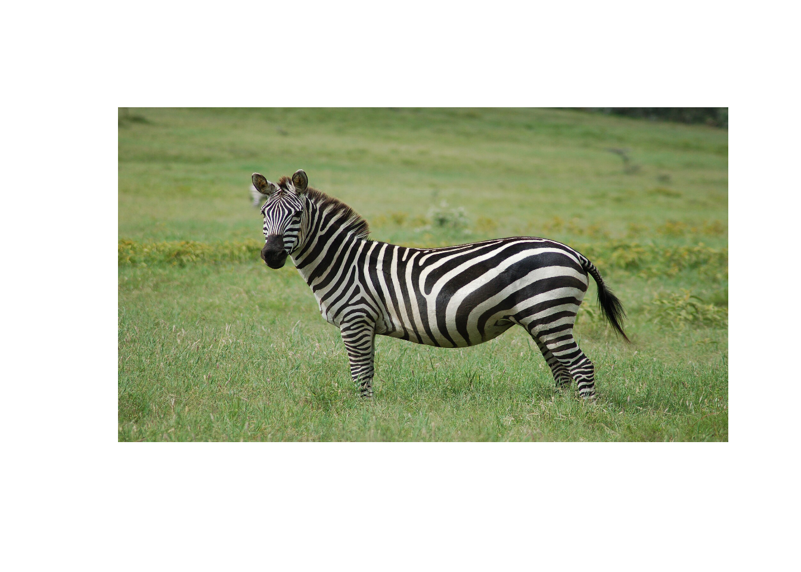
Wichtig: Anders als bei den ANNs müssen wir bei einem CNN das Bild nicht in einen langen Input-Datenvektor umformen (bzw. flatten). Wir werden das Bild also in der oben schematisch dargestellten 3D Struktur in das CNN einspeisen können. Warum das so ist, werden wir weiter unten sehen.
Um genau zu verstehen, was in einem Convolution Layer passiert, werden wir uns hier der Einfachheit halber wieder ein MNIST Beispiel anschauen. Im MNIST haben wir Grayscale Bilder und darum kann das Bild durch eine Matrix dargestellt werden und wir müssen uns vorerst nicht mit den Farbchannels herumschlagen. Die meisten CNNs sind aber für Farbbilder (mit drei Farbchannels) konzipiert.
In einem Convolution Layer schieben wir mehrere sogenannte Convolution Filters über ein Bild. Diese Filter haben das Ziel kleine Muster und Formen im Bild zu erkennen. Doch wie sieht so ein Filter aus? Ein Convolution Filter kann durch eine kleine Matrix dargestellt werden. Häufig werden \(3 \times 3\) Filter (also \(3 \times 3\) Matrizen) verwendet. Im Beispiel weiter unten werden wir folgenden einfachen Filter verwenden:
\[ \begin{bmatrix} 0 & 0 & 0\\ 1 & 1 & 1\\ 0 & 0 & 0 \end{bmatrix} \] Wir werden sehen, dass sich dieser Convolution Filter eignet, um horizontale Segmente im Bild zu erkennen. Überlegen Sie sich kurz anhand der Elemente in der Matrix, warum dieser Filter dafür geeignet sein könnte.
In der folgenden Abbildung schauen wir uns wie in Kapitel 8 das Bild der handgeschriebenen “7” an. Der Prozess der Convolution beginnt beim Pixel links oben. Wir legen den Filter über das Bild, so dass die Mitte des Filters genau auf dem Pixel links oben liegt. Dann multiplizieren wir die Werte des Filters mit den darunter liegenden Pixelwerten und summieren die Werte aller Multiplikationen auf. Der resultierende Wert ist dann der Pixelwert links oben im Output (rechter Teil der Abbildung mit dem Untertitel Convolution). Damit das auch bei allen Pixels am Rand des Bilds funktioniert, umrahmen wir das Bild mit Nullen. Dieser Schritt wird in der Praxis Zero-Padding genannt. Wir sehen in untenstehender Abbildung, dass die Convolution für das Pixel links oben zu einem Wert von 0 führt:
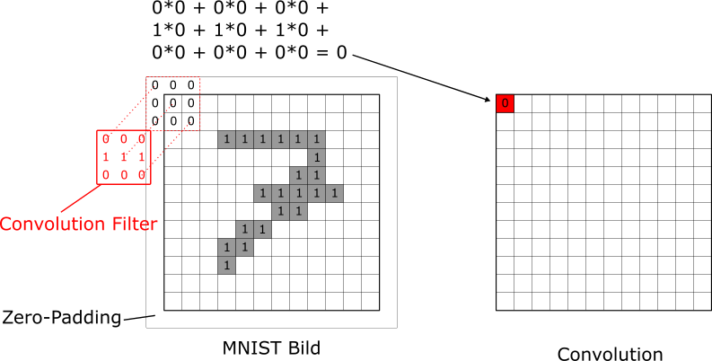
Nun schieben wir den Convolution Filter über das Bild bis wir die Convolution für jedes Pixel berechnet haben. In der nächsten Abbildung schauen wir uns (als weiteres Beispiel) die Convolution für das Pixel in der dritten Zeile und fünften Spalte an. Hier ist der Output der Convolution nun 3:
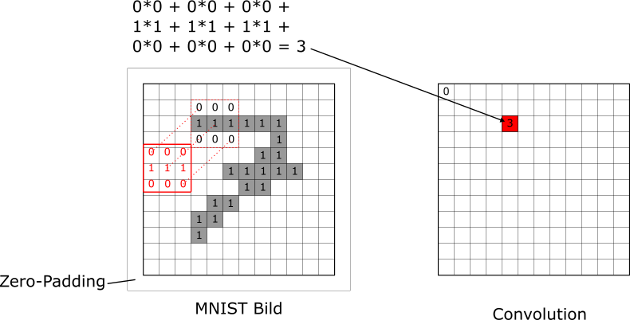
Eine animierte Version des Convolution Prozesses sieht wie folgt aus:
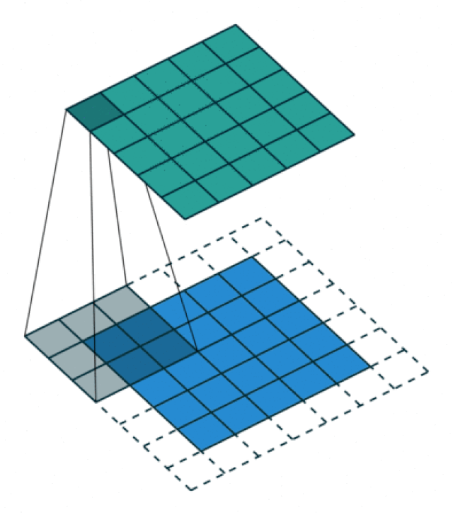
Sobald wir den Filter über das ganze Bild geschoben haben und für jedes Pixel die Convolution berechnet haben, kriegen wir den vollständigen Output dieses Filters (rechts):
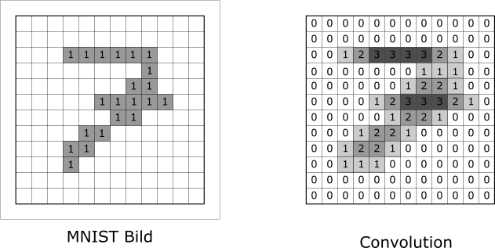
Sie sehen, dass im Output (rechts) die horizontalen Segmente hervorgehoben sind, weil sie höhere Convolution Resultate erzielten (max. den Wert 3). Der Filter hat also tatsächlich dieses Muster erkennen können. Allgemein gilt: der Filter gibt dann grosse Werte zurück, wenn das Muster in der jeweiligen \(3 \times 3\) Submatrix des Bilds dem Filter ähnlich ist. Wir haben hier den Filter jeweils um ein Pixel nach rechts (oder unten) verschoben. In diesem Fall spricht man von einem Stride von 1. Mit einem Stride von 2 würden wir den Filter jeweils um 2 Pixel verschieben. Der Output (die Convolution) wäre dann nur halb so gross wie das Bild (hier also \(6 \times 6\) Pixel).
Und nun der Schlüsselschritt im Verständnis: im obigen Beispiel waren die Werte des Filters (bzw. der Matrix) gegeben. In einem CNN werden die Werte des Filters jedoch automatisch via Backpropagation gelernt. Das CNN lernt also automatisch, auf welche Muster die Filter in den Convolution Layers achten sollen bzw. welche Muster besonders wertvoll sind, um gute Vorhersagen zu machen. Aus meiner Sicht ist das die Magie von CNNs.
Im Fall von Farbbildern ist das ganze etwas komplexer. In dem Fall hat jeder Convolution Filter drei (Filter-)Matrizen (mit potentiell anderen Gewichten), eine pro Farbchannel. Die Convolution findet dann für jeden Channel separat statt und am Schluss werden die drei resultierenden Convolutions wieder übereinandergelegt und pixelweise summiert, so dass jeder Convolution Filter lediglich einen zweidimensionalen Output ausgibt. Ganz am Schluss eines Convolution Layers wird auf jedem Pixel des zweidimensionalen Outputs noch die Aktivierungsfunktion ReLU angewendet.
Wie bereits erwähnt, hat ein Convolution Layer typischerweise mehrere Filter, die alle unterschiedliche Muster erkennen können. Ganz allgemein sagen wir, dass ein Convolution Layer \(K\) Filter hat. Der finale Output jedes Filteres wird dann Feature Map genannt. Das heisst, ein Convolution Layer mit \(K\) Filtern führt zu \(K\) Feature Maps. Dieser Vorgang ist in folgender Abbildung dargestellt:
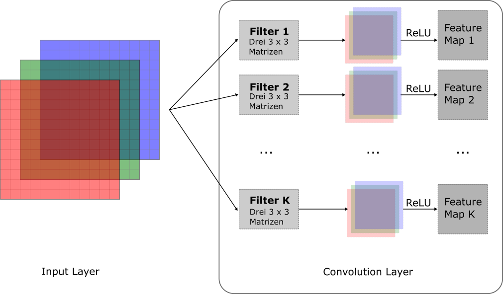
Überlegen wir uns kurz, wie viele Parameter (Gewichte) dieser Convolution Layer hat. Jeder der \(K\) Filter hat drei \(3 \times 3\) Matrizen, d.h. jeder Filter hat insgesamt 27 Parameter1, plus einen Bias Term pro Filter. Daraus folgt, dass ein Convolution Layer in unserem Beispiel insgesamt \((27 + 1) \cdot K\) Parameter hat. Das sind in der Regel wesentlich weniger Parameter als wenn wir ein reguläres ANN verwenden würden, um das Problem zu lösen.
Um uns den Unterschied zwischen klassischen ANN und CNN noch klarer zu vergegenwärtigen, gehen wir kurz zum vereinfachten MNIST Beispiel zurück. Folgende Abbildung zeigt, was in einem ANN und einem CNN mit dem \(12 \times 12\) Bild einer handgeschriebenen “7” passiert:
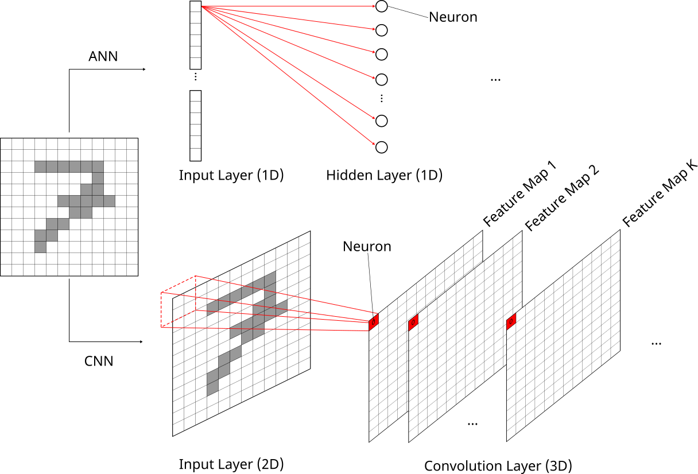
Für das ANN (oberer Teil der Abbildung) werden die Pixel in einen 1D Input Layer geflatted. Der zentrale Punkt ist, dass danach jedes Pixel aus dem Input Layer mit jedem Neuron im Hidden Layer durch ein Gewicht verbunden ist. Für grosse Bilder (z.B. \(1000 \times 1000\) Pixel) ist diese Architektur nicht mehr rechenbar.
Dieses Problem wird durch CNNs gelöst (unterer Teil der Abbildung). Das Bild wird im Originalformat (im Fall eines Grayscale Bilds ist das 2D) im Input Layer dargestellt. Jeder Feature Map im Convolution Layer ist dann ebenfalls zweidimensional, alle Feature Maps zusammen sind dann aber ein 3D Konstrukt (gestapelte Matrizen). Jedes Pixel in einem Feature Map ist in einem gewissen Sinn ein Neuron. Der zentrale Punkt hier ist, dass jedes Pixel (Neuron) in einem Feature Map nur mit 9 Pixels im Input Layer verbunden ist und darum die Konnektivität im Netzwerk sehr lokal ist. Ausserdem verwendet jedes Pixel (Neuron) in einem Feature Map denselben Filter und darum die selben Parameter. Dies wird oft als Weight Sharing bezeichnet. Die lokale Konnektivität und das Weight Sharing begrenzen die Anzahl Gewichte im Vergleich zu einem klassischen ANN massiv.
Nach einem Convolutional Layer kommt in einem CNN oft ein sogenannter Pooling Layer. Die Funktionsweise dieser Art von Layer ist glücklicherweise viel einfacher als diejenige des Convolution Layers.
In den allermeisten Fällen wird heutzutage ein sogenanntes Max-Pooling angewendet. Dabei wird ganz einfach ein \(2 \times 2\) Quadrat über die Outputs eines Convolution Filters (also die Feature Maps) geschoben. Für jeden nicht-überlappenden \(2 \times 2\) Pixelblock wird der maximale Pixelwert in den Pooling Layer übernommen. Am besten schaut wir uns dazu das Beispiel in unten stehender Abbildung an:
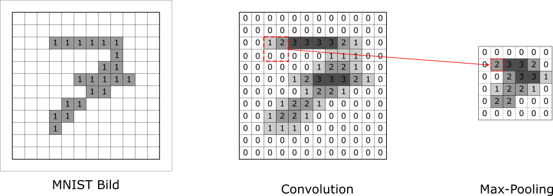
Ganz wichtig: Indem wir Max-Pooling mit einem \(2 \times 2\) Quadrat betreiben, reduzieren wir jeden Feature Map in beide Richtungen um den Faktor 2. Der Pooling Layer reduziert also jeden Feature Map von \(12 \times 12\) zu \(6 \times 6\).
Die Alternative zu Max-Pooling wäre Mean-Pooling, wo für jeden \(2 \times 2\) Pixelblock der Mittelwert über die vier Pixel gerechnet und in den Pooling Layer übernommen wird.
Ein Pooling Layer erfüllt viele verschiedene Zwecke:
Wie eine vereinfachte Architektur eines CNNs aussieht, zeigt folgende Abbildung, die inspiriert ist durch (Géron 2022, Kap. 14):
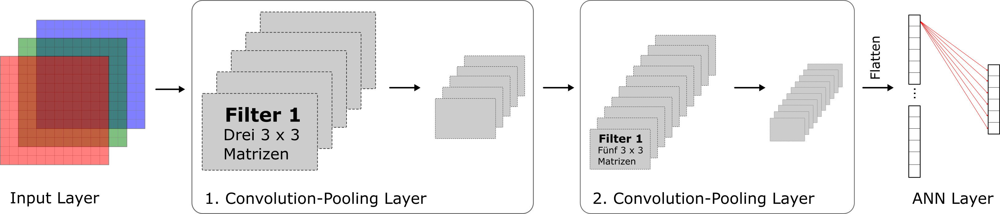
Ihr seht in obiger Abbildung, dass ein CNN typischerweise mehrere Abfolgen von Convolution und Pooling Layers enthält. Wir sehen im ersten Convolution Layer 5 Feature Maps, d.h. wir haben hier \(K=5\) Filter angewendet und jeder Filter bestand aus drei kleinen Matrizen (z.B. \(3\times 3\)). Danach folgt bereits ein erster Pooling Layer, der die 5 Feature Maps kleiner macht. Danach kommt ein zweiter Convolution Layer, der zu 10 Feature Maps führt, d.h. wir haben hier \(K=10\) Filter angewendet. Ganz wichtig: jeder der 10 Filter besteht in diesem Schritt aus 5 kleinen Matrizen (z.B. \(3\times 3\)). Warum? Weil jeder Filter 5 Feature Maps aus dem vorherigen Layer verarbeiten muss. Danach folgt ein zweiter Pooling Layer, der die 10 Feature Maps verkleinert.
Wir können beobachten, dass die Feature Maps durch das Pooling stets etwas kleiner werden. Dafür erhöhen wir grundsätzlich die Anzahl Feature Maps von Layer zu Layer, indem wir in jedem Convolution Layer die Anzahl Filter \(K\) erhöhen. In unserem Beispiel haben wir \(K\) vom ersten zum zweiten Convolution Layer von 5 auf 10 erhöht.
Nach diesen zwei Convolution-Pooling Sequenzen wird der letzte Pooling Output geflatted und es folgen noch einer oder mehrere dense (fully connected) Layers wie wir sie aus einer klassischen ANN Architektur kennen. In obiger Abbildung führt der Output des letzten Pooling Layers der Einfachheit halber direkt in den Output Layer. Hierbei ist jeder Pooling Output mittels eines Gewichts mit einem Output Neuron verbunden (fully connected).
Der Output Layer hat meist eine Softmax Aktivierung, zumindest in Bildklassifikationsproblemen, wo wir versuchen ein Bild in eine von z.B. 6 Kategorien zu klassifizieren (z.B. Vogel, Haus, Baum, Person, etc.).
Die Architektur eines CNNs sowie die Ausgestaltung der einzelnen Layers ist enorm flexibel und es gibt unzählige Hyperparameter. Eine Auswahl:
Eine praxisrelevante Technik, die CNNs massiv verbessert hat, ist Data Augmentation. Bei dieser Technik werden die Bilder, welche als Input-Daten dienen, während des Trainings leicht verändert. Zum Beispiel kann ein gegebenes Bild leicht verschoben oder rotiert werden, es kann ein Ausschnitt (Crop) daraus gewählt werden oder die Lichtbedingungen können verändert werden.
Ein Beispiel sehen Sie in folgender Abbildung:
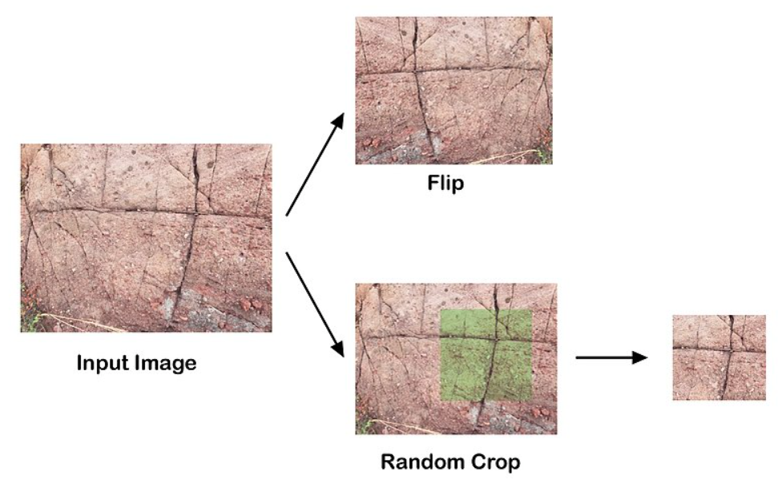
Data Augmentation wirkt wie Regularisierung und kann das Overfitting von CNNs wesentlich eindämmen. Ein weiterer toller Aspekt von Data Augmentation ist, dass die Veränderungen der Bilder on the fly während des Modelltrainings gemacht werden können und die veränderten Bilder nicht abgespeichert werden müssen. Mit Keras und TensorFlow können wir direkt nach dem Input Layer spezielle Layers ins Modell aufnehmen, die solche Data Augmentation Schritte für uns durchführen. Details dazu finden Sie hier.
Wir schauen uns hier die Architektur des Modells ResNet34 an, das im Jahr 2015 von Microsoft Mitarbeitenden vorgeschlagen wurde (He et al., 2015). Eine Variante dieses Modells hat 2015 die sogenannte ImageNet Challenge gewonnen (dazu später mehr).
Der Name ResNet34 ist dadurch begründet, dass Skip Connections verwendet werden und dadurch Residuen (Res) gelernt werden (ähnlich wie beim Gradient Boosting). Was Skip Connections genau sind, sehen wir etwas weiter unten. Ausserdem hat das Modell 34 Layers, wobei die Pooling Layers nicht mitgezählt werden.
Die Architektur des ResNet34 sieht wie folgt aus:
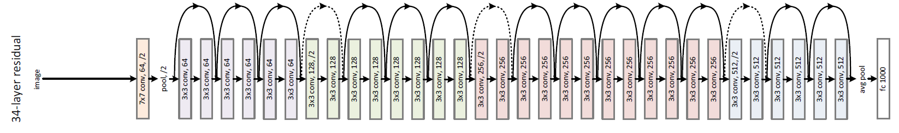
Schauen wir uns die einzelnen Komponenten schrittweise (von links nach rechts) an:
Wow, ziemlich komplex das Ganze, aber die einzelnen Komponenten sind eigentlich erstaunlich simpel.
Es gibt viele verschiedene Möglichkeiten, wie Sie aus praktischer Sicht CNNs verwenden können. Die verschiedenen Möglichkeiten unterscheiden sich im Grad der technischen Komplexität und hängen davon ab, ob eine bestehende (sog. off-the-shelf) Lösung Ihr konkretes Problem bereits vollumfänglich abbildet. Konkret gibt es folgende Möglichkeiten2:
R eine GPU einbinden, ist hier beschrieben.Wir schauen uns hier ein bestehendes CNN an, das mit den Daten aus der ImageNet Challenge trainiert wurde. Der entsprechende Datensatz enthält über 14 Millionen Bilder, welche alle gelabelt sind. Jedes Bild ist in eine von 1000 Kategorien klassifiziert worden. Die möglichen Kategorien finden Sie hier. Die Performance wird mit der Top-5 Error Rate gemessen, d.h. eine Vorhersage entspricht nur dann einem Fehler, wenn das wahre Label nicht unter den Top-5 Vorhersagen des Modells ist. Das aktuell beste Modell hat eine Top-5 Error Rate von etwas mehr als 2%.
Wir werden hier das ResNet50 Modell verwenden. Eine Variante davon hat die 2015 ImageNet Challenge gewonnen mit einer Top-5 Error Rate von weniger als 3.6% (Géron 2022, 505). Wir haben uns im vorherigen Kapitel bereits die Architektur des etwas kleineren Modells ResNet34 angeschaut. Die Architektur von ResNet50 ist sehr ähnlich, hat aber nochmal mehr Layers (ist also deeper).
Als erstes laden wir das trainierte Modell mit Keras. Dazu verwenden wir die Funktion application_resnet50(). Wir kriegen das Modell mit den optimalen Gewichten, indem wir das Argument weights = "imagenet" setzen. Mit der summary() Funktion können wir uns die Architektur des Modells anschauen:
# Packages laden
library(tidyverse)
library(tensorflow)
library(keras3)
# Als erstes laden wir das resnet50 Model und zwar mit den optimalen Gewichten.
model <- application_resnet50(weights = "imagenet")
# Schauen wir uns die Architektur dieses Modells mal an.
summary(model)Model: "resnet50"
__________________________________________________________________________________________________
Layer (type) Output Shape Param # Connected to
==================================================================================================
input_1 (InputLayer) [(None, 224, 224, 3)] 0
__________________________________________________________________________________________________
conv1_pad (ZeroPadding2D) (None, 230, 230, 3) 0 input_1[0][0]
__________________________________________________________________________________________________
conv1_conv (Conv2D) (None, 112, 112, 64) 9472 conv1_pad[0][0]
__________________________________________________________________________________________________
conv1_bn (BatchNormalization) (None, 112, 112, 64) 256 conv1_conv[0][0]
__________________________________________________________________________________________________
conv1_relu (Activation) (None, 112, 112, 64) 0 conv1_bn[0][0]
__________________________________________________________________________________________________
pool1_pad (ZeroPadding2D) (None, 114, 114, 64) 0 conv1_relu[0][0]
__________________________________________________________________________________________________
pool1_pool (MaxPooling2D) (None, 56, 56, 64) 0 pool1_pad[0][0]
__________________________________________________________________________________________________
...
_______________________________________________________________________________________________________
avg_pool (GlobalAveragePooling2D) (None, 2048) 0 conv5_block3_out[0][0]
_______________________________________________________________________________________________________
probs (Dense) (None, 1000) 2049000 avg_pool[0][0]
=======================================================================================================
Total params: 25,636,712
Trainable params: 25,583,592
Non-trainable params: 53,120
_______________________________________________________________________________________________________Die Architektur des Modells ist riesig, weshalb ich sie hier verkürzt dargestellt habe. Sie sehen beim Input Layer, dass das Modell Farbbilder (3 Channels) mit einer Auflösung von 224 x 224 Pixels erwartet. Nach dem Input Layer kommt der erste Convolutional Layer (= oranger Layer in ResNet34 Architektur). In Keras bzw. TensorFlow werden die einzelnen Elemente eines Convolution Layers separat dargestellt. Der erste Layer setzt sich zusammen aus:
conv1_pad (ZeroPadding2D): In einem ersten Schritt wird das Zero Padding gemacht und da brauchen wir selbstverständlich keine Gewichte dazu.conv1_conv (Conv2D): Dann kommen 64 (\(7 \times 7\)) Convolution Filters. Überlegen wir uns doch kurz, wie wir auf die insgesamt 9472 Gewichte kommen. Wir haben 64 Filter, wovon jeder drei \(7 \times 7\) Matrizen enthält. Warum drei? Weil wir pro Farbchannel eine separate \(7 \times 7\) Matrix haben. Das gibt uns bereits \(64 \cdot 3 \cdot 7 \cdot 7 = 9408\) Gewichte. Dazu kommen noch 64 Bias Terms, was uns dann insgesamt \(9408 + 64 = 9472\) Gewichte gibt.conv1_bn (BatchNormalization): Danach kommt eine sogenannte Batch Normalization, was vereinfacht nichts anderes als eine Standardisierung der Outputs der Convolution Filters ist.conv1_relu (Activation): ReLU Aktivierung der standardisierten Outputs in den 64 Feature Maps.Danach folgt der Max. Pooling Layer, welcher in Keras bzw. TensorFlow ebenfalls in zwei Unterschritte aufgeteilt wird: pool1_pad (ZeroPadding2D) und pool1_pool (MaxPooling2D). Oben nicht abgebildet sind die diversen Gruppen von Convolution Layers, welche nun folgen würden.
Der Output Layer ist dense und enthält 1000 Neurons, da wir die Wahrscheinlichkeiten für 1000 Kategorien rechnen wollen. Der zweitletzte Global Average Pooling Layer hat 2048 Neurons (in ResNet34 hatten wir hier nur 512 Neurons), wodurch der Output Layer insgesamt \((2048 + 1) \cdot 1000 = 2'049'000\) Gewichte hat. Ganz unten im Output ist ersichtlich, dass das Modell insgesamt über 25 Millionen Parameter hat, wovon die meisten trainiert werden müssten. Hier haben wir aber die bereits trainierten (optimalen) Gewichte importieren können.
Nun extrahieren wir die Gewichte aus dem Modell und schauen uns den ersten Filter im ersten Convolutional Layer an. Anhand des Indexings, [ , , , 1], seht ihr, dass die Gewichte in einem 4-dimensionalen Array gespeichert sind. Die ersten beiden Dimensionen bezeichnen die Dimensionen der Filtermatrizen (also \(7 \times 7\)). Die dritte Dimension bezeichnet die Anzahl Feature Maps, welche der Convolutional Layer aus dem vorherigen Layer erwartet. In unserem Fall sind das 3, da wir im ersten Convolutional Layer die drei Farbchannels aus dem Input Layer erhalten. Die vierte Dimension bezeichnet die Anzahl Filter des vorliegenden Convolutional Layers. Mit der 1 spezifizieren wir, dass wir nur den ersten Filter anschauen wollen.
# Wir können auch die Gewichte extrahieren.
optimal_weights <- model |> get_weights()
# Erster Convolution Filter im ersten Conv. Layer
optimal_weights[[1]][ , , , 1], , 1
[,1] [,2] [,3] [,4] [,5] [,6] [,7]
[1,] 0.028252628 0.01818723 0.015884932 0.002420052 -0.05301533 -0.04735583 0.01854295
[2,] 0.007990093 0.02488567 0.076726004 0.090264283 -0.01891512 -0.07935619 -0.01536172
[3,] -0.027473288 -0.06575351 0.019992139 0.184763417 0.11552856 -0.08998038 -0.09464549
[4,] -0.009787651 -0.07923734 -0.129819512 0.095235661 0.27007112 0.09940726 -0.01493159
[5,] 0.023180470 -0.04645163 -0.183006614 -0.156041548 0.05361670 0.08349565 0.03695760
[6,] 0.042254806 0.04594706 -0.046616178 -0.127040774 -0.02102392 0.03322218 0.02505229
[7,] 0.014630316 0.03523030 0.004108737 -0.060385078 -0.01716923 0.01151425 0.00479147
, , 2
[,1] [,2] [,3] [,4] [,5] [,6] [,7]
[1,] 0.005868278 0.01875543 0.03614214 0.01715494 -0.09355789 -0.124100089 -0.02680790
[2,] -0.007687946 0.02429662 0.14944476 0.21562344 0.01338885 -0.176872283 -0.12294715
[3,] -0.074660495 -0.15249401 0.06102424 0.41499856 0.33233449 -0.081507459 -0.21111147
[4,] -0.054444715 -0.25528842 -0.26442963 0.21033862 0.57014650 0.277241141 -0.02648117
[5,] 0.023048820 -0.17785294 -0.41178319 -0.26845443 0.18579270 0.250555605 0.09637067
[6,] 0.097701266 0.03894836 -0.19233614 -0.29224005 -0.03729927 0.099565394 0.10021943
[7,] 0.061221115 0.06344386 -0.02231540 -0.17049119 -0.08630268 0.007418274 0.02751930
, , 3
[,1] [,2] [,3] [,4] [,5] [,6] [,7]
[1,] -0.0024409075 0.01904538 0.02179598 -0.003380956 -0.0769589692 -0.07131131 0.01439408
[2,] 0.0003704716 0.02912742 0.11718027 0.150795683 -0.0093867844 -0.13021459 -0.07923260
[3,] -0.0334048420 -0.08807442 0.08053155 0.324004412 0.2164803147 -0.09732457 -0.17507587
[4,] -0.0174925867 -0.15134996 -0.18083088 0.167103648 0.4065239429 0.16355224 -0.07702903
[5,] 0.0203978457 -0.10906302 -0.27673617 -0.172197968 0.1320384443 0.14969076 0.02951569
[6,] 0.0638262108 0.04572181 -0.11566665 -0.178826123 0.0007846743 0.06553538 0.06971015
[7,] 0.0186353922 0.03358492 -0.02011830 -0.127520546 -0.0607556999 0.00784576 0.02711843Wie erwartet besteht der erste Filter aus drei 7 x 7 Matrizen.
Wir laden nun das Bild des Zebras mit der Funktion image_load() und lassen es durch die Funktion gleich in die korrekte Auflösung überführen. Wir erinnern uns, dass ResNet50 Bilder mit einer Auflösung von \(224 \times 224\) Pixels erwartet. Danach konvertieren wir das Bild in einen 3D-Array:
# Lade ein Bild mit 'image_load()'
# Wichtig: resnet50 erwartet eine Auflösung von 224 x 224 Pixels
img <- image_load("images/zebra.jpg", target_size = c(224, 224))
# Wir konvertieren das Bild in einen 3D-Array (letzte Dimension sind die drei Farbchannels)
x <- image_to_array(img)Nun verändern wir die Dimensionalität des Bilds in einen 4-D Array. Warum wir das tun, ist im Code Kommentar unten beschrieben.
# Hier müssen wir noch eine vierte Dimension voranstellen.
# Diese Dimension bezeichnet die Batchgrösse. Da wir hier
# nur für ein Bild eine Vorhersage machen wollen, hat diese
# Dimension den Wert 1.
x <- array_reshape(x, c(1, dim(x)))Die Funktion imagenet_preprocess_input() enthält alle notwendigen Preprocessing Schritte, welche das Modell erwartet.
# Und nun noch ein paar spezifischen Preprocessing Schritte,
# welche in der Funktion 'imagenet_preprocess_input()' def. sind.
x <- imagenet_preprocess_input(x)Nun können wir die Vorhersage des Modells für unser Bild x rechnen und die Top-5 Vorhersagen ausgeben lassen.
# Nun rechnen wir die Vorhersage
preds <- model |> predict(x)
# Schöner Output:
imagenet_decode_predictions(preds, top = 5)[[1]] class_name class_description score
1 n02391049 zebra 0.9954357743
2 n02130308 cheetah 0.0009791906
3 n02423022 gazelle 0.0004443732
4 n02422106 hartebeest 0.0004240675
5 n02129604 tiger 0.0004097163Das Modell hat kein Problem, das Bild korrekt zu klassifizieren. Doch was passiert eigentlich in all diesen Convolution Layers? Der folgende Blogpost zeigt die Outputs der Convolution Layers für eine andere bekannte CNN Architektur, nämlich VGG16.
Im Bereich Computer Vision gibt es viele verschiedene Probleme. Das bekannteste Problem ist die hier betrachtete Klassifikation eines Objekts in einem Bild. Andere Probleme sind die gleichzeitige Klassifikation und Lokalisation eines Objekts in einem Bild, die Erkennung von mehreren Objekten in einem Bild oder die Klassifikation jedes Pixels in einem Bild. All diese Varianten des Standard Computer Vision Problems sind in (Géron 2022, Kap. 14) im Detail beschrieben.
\(3^3 = 27\)↩︎
Siehe auch (Géron 2022, Kap. 14) für detailliertere Ausführungen zu diesem Thema.↩︎
Seit der Einführungen von grossen Sprachmodellen gibt es eigens dafür grosse Unternehmen, welche die aufwendige Arbeite des manuellen Annotierens von Daten in Billiglohnländer auslagern.↩︎